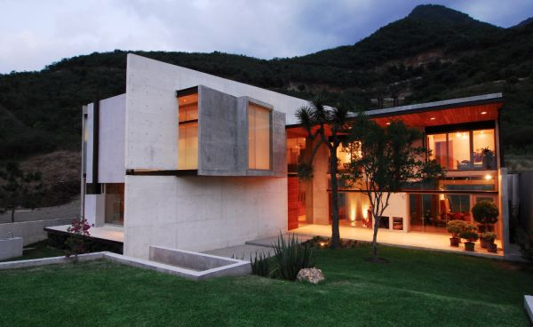

Cottage Home Plans
Cottages look as if they just stepped out of a fairy tale. Often built as vacation homes, cottages are "frillier" than cabins and feature lots of detail, like window boxes, arched doors or gingerbread trim. They are traditional in style and are often one or one-and-a-half stories. Many feature fireplaces and some outdoor living space.
Features
Asymmetrical design with uneven roofline
Prominent chimney
Window boxes and shutters